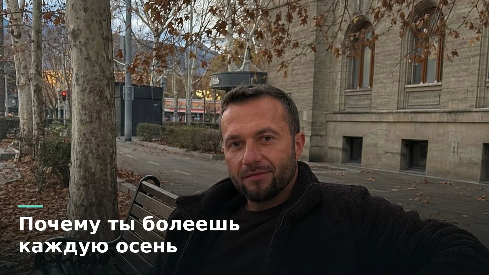

Почему одни не болеют, а другие каждую осень: микробиом и иммунитет
19 августа 2026 · Андрей Шелест

Есть люди, которые проходят всю зиму без единого чиха. А есть такие, кто ловит каждый вирус в офисе. Дело часто не в закалке и не в витамине С из аптеки. Дело в том, кто живёт у них в кишечнике.
Кишечник это главный пограничный пункт организма
Около семидесяти процентов иммунных клеток живёт именно там, в кишечнике. Это не метафора, это анатомия. Стенка кишечника это главный пограничный пункт между внешним миром и твоим телом. Всё, что ты ешь и вдыхаешь, проходит проверку именно здесь.
И главные охранники на этом пункте это твои бактерии. Они тренируют иммунные клетки отличать своих от чужих. Они занимают место и ресурсы, не оставляя пространства для патогенов. Они выделяют вещества, которые убивают враждебные микробы. Сильная, разнообразная колония это армия, которая держит оборону круглосуточно.
Город и деревня: откуда разница
Ребёнок, который рос рядом с животными, копался в земле и ел простую еду, получает огромное разнообразие микробов. Городской ребёнок растёт в стерильной квартире, на антибактериальном мыле и обработанной еде. Его микробиом беднее. А бедный микробиом это слабо обученная иммунная система, которая либо пропускает угрозы, либо бьёт по своим и даёт аллергию.
Что убивает микробиом
Первый враг, антибиотики. Они нужны, когда нужны, но один курс выкашивает не только болезнь, но и полезных жителей заодно. Второй, хронический стресс. Когда ты постоянно на взводе, тело меняет среду в кишечнике, и полезным бактериям там становится некомфортно. Третий, фастфуд и сахар, которые кормят не тех, кого надо. Четвёртый, недосып. Микробы живут по своим биологическим часам, и когда ты ломаешь режим, ломаешь и их.
Как восстановить защиту
Через питание, прежде всего. Клетчатка из овощей и зелени это топливо для полезных бактерий. Ферментированные продукты, квашеная капуста, кефир, йогурт без сахара это живые микробы, которые пополняют колонию. Разнообразие на тарелке важнее, чем любая отдельная супереда. Чем разнообразнее ты ешь, тем богаче твой внутренний гарнизон.
Я видел это на собственном опыте и на спортсменах, с которыми работаю. Когда налаживаешь питание и сон, частота простуд падает сама собой. Не потому что появилась волшебная таблетка, а потому что армия внутри снова в боевой готовности.
Иммунитет не покупается в баночке. Он выращивается каждый день тем, что ты кладёшь в тарелку и как ты спишь.
Автор: Андрей Шелест, тренер, чемпион мира (МСМК). Биолог-эколог, окончил Новосибирский государственный медицинский университет, специализация «экология человека».
Это ознакомительный материал, а не индивидуальная рекомендация. Разбор конкретного случая с учётом вашего питания и анализов я делаю персонально.